Las seis preguntas de la semana, explicadas con calma, para quien quiera entender el mundo.
Edición N.° 010 · Popular·Semana del 13 al 19 de junio de 2026·San José, Costa Rica
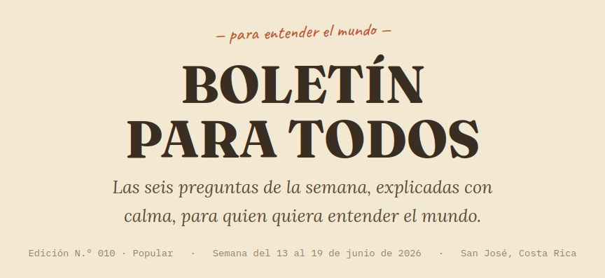
Estimado lector, estimada lectora:
Cada semana pasan en el mundo cosas que después comentamos en la fila de la pulpería, en el bus, en la sobremesa: que si terminó una guerra, que si descubrieron algo raro bajo la tierra, que si la presidenta dijo tal cosa. Pero casi nunca alguien se sienta a explicarlas con calma, sin apuro y sin dar por sentado que uno ya sabe de qué se trata.
Eso es lo que intentamos aquí: contarle las seis noticias más importantes de esta semana de la misma forma en que se las contaríamos a un vecino, sentados en el corredor de la casa. Sin perder ni un poquito de seriedad —porque usted se merece la verdad completa, no una versión recortada—, pero sin las palabras complicadas que a veces usan los noticieros para sonar importantes.
Para cada noticia le decimos tres cosas: qué pasó de verdad, qué tan seguros estamos de eso, y qué tiene que ver con nosotros, aquí en Costa Rica. Al final, le dejamos algunas curiosidades y las preguntas que todavía nadie puede responder con certeza.
¿De verdad se acabó la guerra entre Estados Unidos e Irán?
por ahora, sí — pero con un candado que cualquiera puede volver a abrir
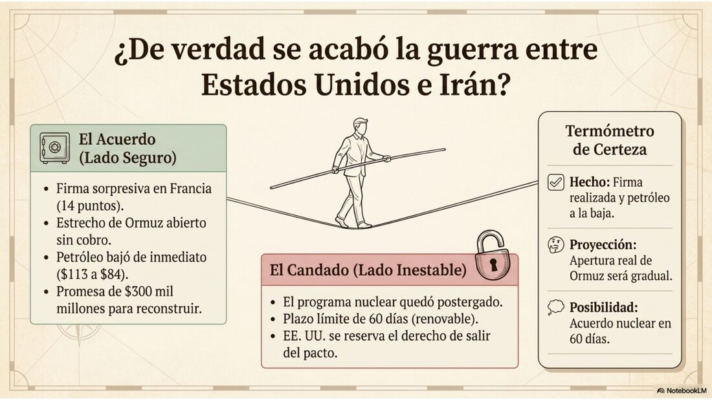
Qué pasó de verdad
El martes pasado, en una cena en Francia, el presidente de Estados Unidos firmó con su propia mano un documento de paz con el presidente de Irán. Fue una sorpresa: se suponía que la firma oficial iba a ser en Suiza, con toda la ceremonia, pero terminó pasando de improviso, en medio de una cena.
El documento tiene catorce puntos. Lo más importante: el estrecho de Ormuz —un paso de mar angosto por donde circula una quinta parte del petróleo de todo el mundo— vuelve a abrirse al tráfico comercial, sin cobro, por sesenta días. También se levantan poco a poco algunas sanciones contra Irán, y se habla de reconstruir el país con al menos 300 mil millones de dólares.
Lo que no se resolvió es lo más espinoso: qué va a pasar con el programa nuclear de Irán. Eso quedó para más adelante, con un plazo de sesenta días que se puede alargar.
Qué tan seguros estamos
Termómetro de certeza
✅Esto lo sabemos seguro: la firma ocurrió, el documento existe y se leyó en público. El precio del petróleo bajó de inmediato.
🤔Esto creemos que pasará, pero no es seguro: que el estrecho se mantenga realmente abierto. Algunos analistas dicen que, al inicio, va a abrirse solo a medias.
💭Esto es solo una posibilidad: que dentro de sesenta días se firme un acuerdo nuclear definitivo. El propio presidente de Estados Unidos dejó dicho que puede salirse del pacto si así lo decide.
Por qué esto no está cerrado del todo
Imagínese una cuerda floja: la guerra terminó en los papeles, pero el equilibrio todavía es delicado. La firma abre una puerta hacia la paz, pero la puerta también se puede volver a cerrar, porque la parte más difícil —el tema nuclear— se dejó para después, y porque uno de los dos firmantes se reservó el derecho de echarse para atrás.
🌱 ¿Y en Costa Rica, qué tiene que ver?
Costa Rica no produce petróleo: lo compramos todo afuera. Cuando el petróleo sube de precio, nos sube la gasolina, el transporte y, con el tiempo, hasta la comida. La guerra entre Irán y Estados Unidos había disparado el precio del barril a más de 113 dólares en marzo; con esta tregua, bajó a menos de 84. Si la calma se mantiene, eso debería sentirse —con el tiempo— en lo que pagamos por llenar el tanque.
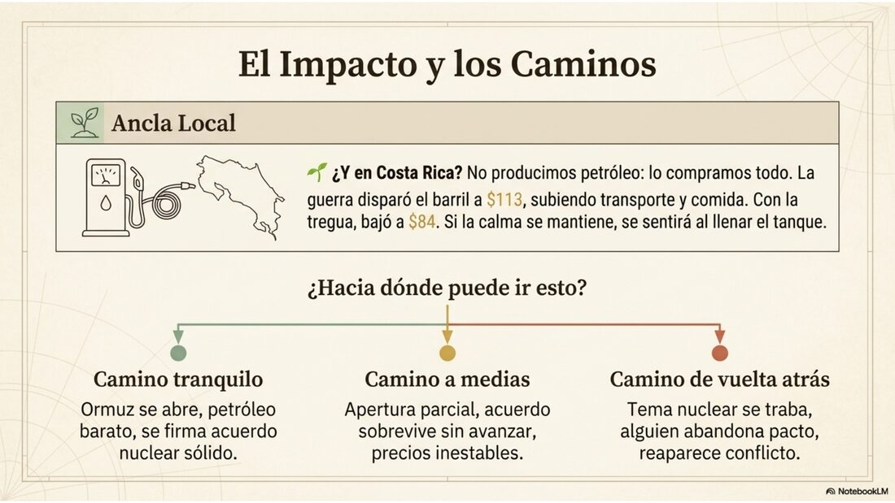
¿Hacia dónde puede ir esto?
→
Camino tranquilo: el estrecho se abre de verdad, el petróleo se mantiene barato, y en sesenta días se firma algo más sólido sobre lo nuclear.
→
Camino a medias: la apertura es parcial, el acuerdo sobrevive pero sin avanzar, y los precios quedan inestables.
→
Camino de vuelta atrás: el tema nuclear se traba, alguien se sale del pacto, y el conflicto puede reaparecer.
Política internacional
¿Quién va a gobernar Colombia los próximos cuatro años?
eso se decide este domingo, y nadie sabe todavía cómo va a salir
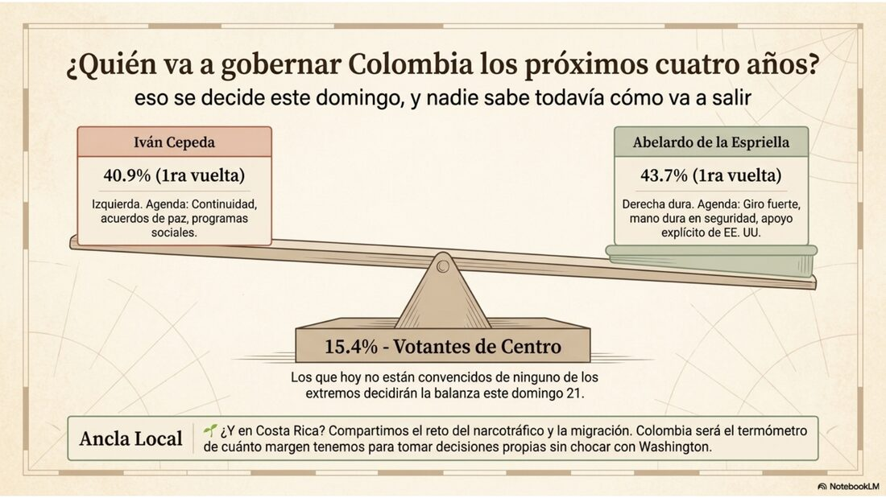
Qué pasó de verdad
El domingo 21 de junio, Colombia elige presidente entre dos personas que piensan de forma casi opuesta. Abelardo de la Espriella es un abogado de derecha dura, que en la primera vuelta sacó 43,7 % de los votos. Iván Cepeda es el candidato de la izquierda que hoy gobierna el país, y sacó 40,9 %. Ninguno de los dos alcanzó a ganar de una vez, así que van a una segunda vuelta.
Cepeda quiere seguir con el camino que viene llevando el actual gobierno: acuerdos de paz, programas sociales. De la Espriella quiere un giro fuerte hacia la mano dura en seguridad y cerrar esa puerta de los acuerdos de paz. El presidente de Estados Unidos dijo en público que apoya a De la Espriella, lo cual metió más presión todavía a una elección ya de por sí muy tensa, sobre todo después de que en 2025 asesinaran a un precandidato.
Qué tan seguros estamos
Termómetro de certeza
✅Esto lo sabemos seguro: la elección es este domingo y esos son los dos candidatos, con esas cifras de primera vuelta.
🤔Esto creemos, pero no es seguro: que el resultado va a estar muy reñido. Con apenas tres puntos de diferencia, cualquiera de los dos puede ganar.
💭Esto es solo una posibilidad: que el respaldo público de Estados Unidos a uno de los candidatos termine ayudándolo o, al contrario, terminé jugándole en contra.
Por qué se dice que es un cruce de caminos
Esta elección es de esas que de verdad cambian el rumbo de un país por años: no es un ajuste pequeño, sino una decisión entre dos formas completamente distintas de gobernar. Quien termine ganando lo va a hacer, probablemente, gracias a un grupo de votantes de centro que hoy no está convencido de ninguno de los dos extremos.
🌱 ¿Y en Costa Rica, qué tiene que ver?
Colombia y Costa Rica se parecen en algo importante: los dos somos países que dependemos de mantener buena relación con Estados Unidos, y los dos lidiamos con el narcotráfico y la migración como temas de todos los días. Lo que pase en Colombia es una especie de termómetro de qué tanto margen tienen los gobiernos de la región para tomar sus propias decisiones sin chocar con la potencia del norte.
¿Hacia dónde puede ir esto?
→
Gana Cepeda: Colombia sigue con la agenda de paz, aunque más moderada que antes.
→
Gana De la Espriella: Colombia da un giro hacia la mano dura y se acerca más a Washington.
→
Resultado muy parejo: hay reclamos, demoras, y el país entra en un periodo de tensión política mientras se resuelve.
Ciencia
¿Para qué sirve estudiar partículas que nadie puede ver ni tocar?
porque ayudan a explicar por qué el universo —y nosotros— existimos
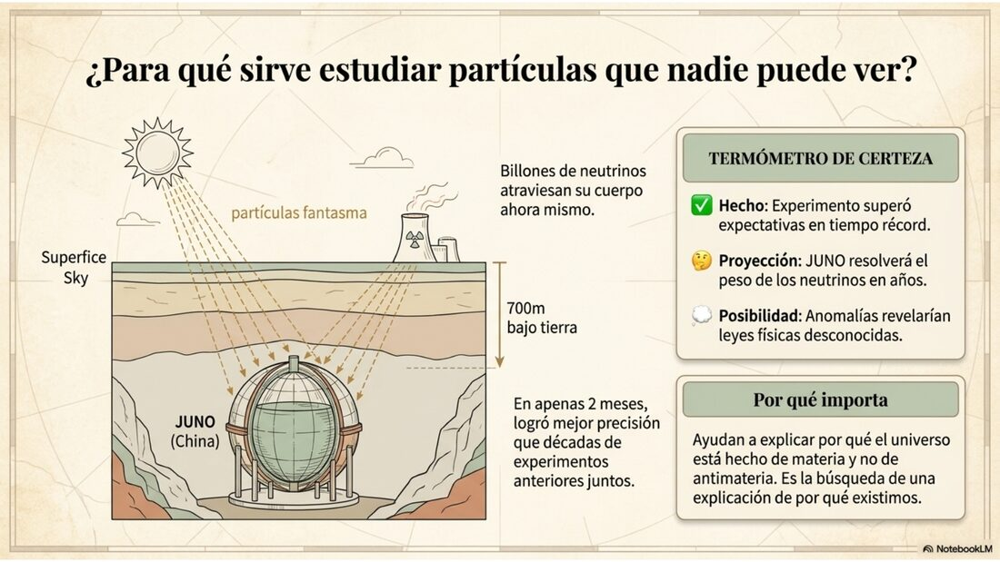
Qué pasó de verdad
En China, a 700 metros bajo tierra, hay un detector gigante lleno de un líquido especial, rodeado de sensores carísimos. Se llama JUNO y su trabajo es atrapar neutrinos: partículas tan pequeñas y tan «fantasma» que billones de ellas atraviesan su cuerpo ahora mismo sin que usted lo note. Vienen del Sol, de reactores nucleares, de las estrellas.
Esta semana, JUNO entregó su primer resultado, y fue noticia mundial: con apenas dos meses de mediciones, logró una precisión mejor que la de todos los experimentos anteriores juntos, sumando décadas de trabajo. El objetivo de fondo es resolver un misterio que lleva años abierto: en qué orden están organizados, según su peso, los tres tipos de neutrino que existen.
Qué tan seguros estamos
Termómetro de certeza
✅Esto lo sabemos seguro: el experimento funcionó mejor de lo esperado, y eso ya quedó publicado y revisado por otros científicos.
🤔Esto creemos, pero no es seguro: que con algunos años más de mediciones, JUNO va a poder resolver el orden de pesos de los neutrinos.
💭Esto es solo una posibilidad: que una pequeña diferencia que se sigue viendo entre dos formas de medir los neutrinos sea, en realidad, una pista hacia física que todavía no conocemos.
Por qué importa, en cristiano
Una de las grandes preguntas sin responder es por qué el universo está hecho casi todo de materia, y casi nada de antimateria —su «gemela opuesta», que se destruye al tocarse con la materia. Si al principio del universo había las mismas cantidades de ambas, ¿por qué sobrevivió más una que la otra? Hay una teoría que dice que los neutrinos tuvieron algo que ver en ese desbalance. Por eso entender mejor a los neutrinos no es un capricho de laboratorio: es, en buena parte, la búsqueda de una explicación de por qué existimos.
🌱 ¿Y en Costa Rica, qué tiene que ver?
No tenemos un detector así, y probablemente nunca lo tengamos: cuesta muchísimo dinero y muchísimos años de trabajo. Pero el país sí participa, en menor escala, en proyectos internacionales de astrofísica, y tiene una tradición científica que puede crecer en esa dirección. La lección útil de JUNO no es que debamos competir con China en física de partículas, sino que la inversión sostenida durante años —sin resultados inmediatos— termina dando frutos enormes. Esa paciencia es un valor que también aplica a la ciencia que hacemos en casa.
Ciencia · Nuestra tierra
¿Sabía que bajo sus pies hay una red más larga que mil veces la distancia hasta el Sol?
los hongos del suelo, esos que nunca vemos, sostienen buena parte de la vida en la superficie
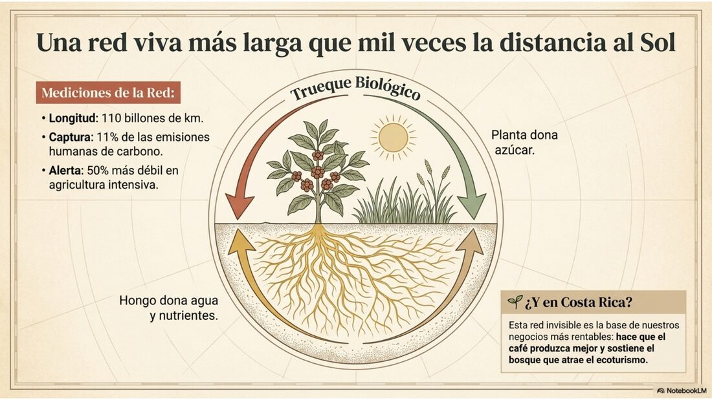
Qué pasó de verdad
Bajo casi cualquier potrero, cafetal o bosque hay hongos finísimos, invisibles a simple vista, que se enredan con las raíces de las plantas. La planta les regala azúcar; el hongo le devuelve agua y nutrientes que la raíz sola jamás alcanzaría. Es un trueque que lleva millones de años funcionando.
Esta semana, un grupo de científicos publicó el primer mapa del mundo entero de esta red. Las cifras marean: si se estiraran todos esos hilos juntos, alcanzarían unos 110 billones de kilómetros —casi mil veces la distancia de la Tierra al Sol—. Y cada año, esta red ayuda a meter bajo tierra una cantidad de carbono equivalente a cerca del 11 % de todo lo que la humanidad emite al aire. También encontraron algo preocupante: en los suelos de agricultura intensiva, esta red está hasta un 50 % más débil que en los pastizales silvestres.
Qué tan seguros estamos
Termómetro de certeza
✅Esto lo sabemos seguro: el mapa existe, fue publicado en una revista científica seria, y muestra que esa red está más débil donde la agricultura es más intensiva.
🤔Esto creemos, pero no es seguro: las cifras exactas —los billones de kilómetros, las toneladas de carbono— son cálculos hechos con modelos, no una medición directa de cada metro del planeta.
💭Esto es solo una posibilidad: que cuidar esta red ayude de forma importante a frenar el cambio climático. Es razonable pensarlo, pero todavía falta saber cuánto de ese carbono se queda guardado y por cuánto tiempo.
Por qué importa, en cristiano
El oro de un terreno se puede sacar una sola vez: se agota y no vuelve. Esta red, en cambio, sigue dando frutos año tras año, mientras se la cuide —es como una vaca lechera frente a un tesoro enterrado: uno se acaba al sacarlo, la otra sigue produciendo si se la alimenta bien. El problema es que, como no se ve, es muy fácil tratarla como si no valiera nada y destruirla sin darse cuenta de lo que se pierde.
🌱 ¿Y en Costa Rica, qué tiene que ver?
Costa Rica ha construido buena parte de su imagen en el mundo sobre la conservación: el pago por servicios ambientales, el ecoturismo, el café y el cacao de calidad. Estos hongos son, literalmente, una parte invisible de esa fortaleza: ayudan a que el café y el cacao produzcan mejor, a que el suelo aguante mejor la sequía, y a que el bosque siga absorbiendo carbono. Cuidarlos no es solo un gesto ambiental: es cuidar la base de varios de nuestros negocios más importantes.
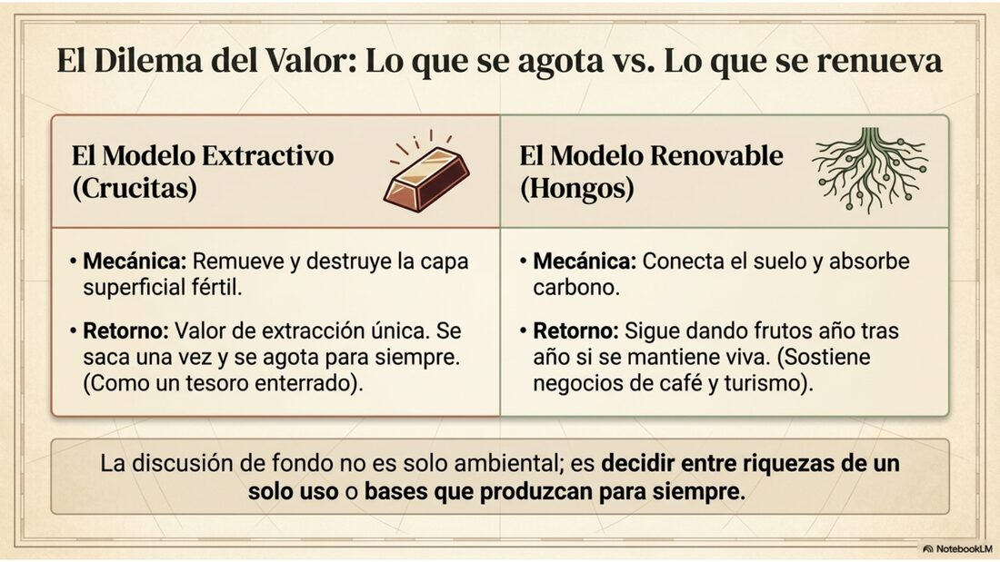
Una conexión que vale la pena pensar
Justo esta semana, la presidenta visitó Crucitas para empujar un proyecto de ley que reactivaría la minería de oro a cielo abierto en esa zona —algo prohibido en el país desde 2010. La minería de ese tipo remueve precisamente la capa de tierra donde vive esta red de hongos. No se trata de decir que un valor sea automáticamente mejor que el otro, sino de notar algo simple: el oro se saca una sola vez y no vuelve; la red de hongos, si se mantiene viva, sigue dando frutos cada año. Esa diferencia —entre algo que se agota y algo que se renueva— es, en el fondo, el corazón de la discusión sobre Crucitas. Si quiere profundizar en este tema, el equipo de ANCA-ADD preparó un anexo especial completo sobre Crucitas y esta misma red de hongos →
Tecnología
¿Quién va a poner las reglas a la inteligencia artificial?
los mismos que la construyen le pidieron a los gobiernos que los vigilen
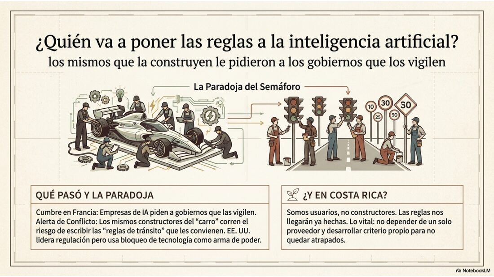
Qué pasó de verdad
En una cumbre de los países más ricos del mundo, en Francia, los dueños de las empresas más importantes de inteligencia artificial se sentaron a almorzar con los presidentes y les pidieron, en público y en privado, que se creen reglas internacionales para controlar esta tecnología. Uno de ellos pidió un espacio internacional donde se pongan a prueba los sistemas antes de soltarlos al mundo; otros propusieron una alianza liderada por Estados Unidos.
Lo curioso —y lo incómodo— es que esto pasó pocos días después de que el propio gobierno de Estados Unidos obligara a una de esas mismas empresas a sacar de circulación algunos de sus programas más avanzados, por reglas de exportación. Es decir: el mismo país que se ofrece a liderar la regulación, también está usando esa tecnología como herramienta de poder.
Qué tan seguros estamos
Termómetro de certeza
✅Esto lo sabemos seguro: la reunión ocurrió y uno de los empresarios lo pidió en público, frente a las cámaras.
🤔Esto creemos, pero no es seguro: los detalles de lo que se habló a puerta cerrada, porque solo los conocemos por fuentes que pidieron no dar su nombre.
💭Esto es solo una posibilidad: que de esta reunión salga, de verdad, una regla internacional que se cumpla. De momento no hubo ningún compromiso firmado.
Por qué importa, en cristiano
Es como si los fabricantes de un carro nuevo, y muy potente, le pidieran al gobierno que ponga semáforos y límites de velocidad antes de que alguien se mate. Suena responsable. Pero también pasa que esos mismos fabricantes son los que más saben de cómo funciona el carro por dentro, así que corren el riesgo de terminar escribiendo ellos mismos las reglas que les conviene tener.
🌱 ¿Y en Costa Rica, qué tiene que ver?
Nosotros usamos esta tecnología, pero no la construimos. Eso significa que las reglas se van a decidir en otra parte, lejos de aquí, y nosotros las vamos a recibir ya hechas. Lo más sensato para el país es no depender de un solo proveedor, prepararse para entender y evaluar estas herramientas con criterio propio, y buscar espacios internacionales donde nuestra voz también cuente —aunque sea pequeña frente a las grandes potencias.
Costa Rica
¿Por qué se enojó tanta gente con lo que dijo la presidenta sobre Nicaragua?
una frase sobre «el gobierno que ellos eligieron» chocó con años de denuncias documentadas
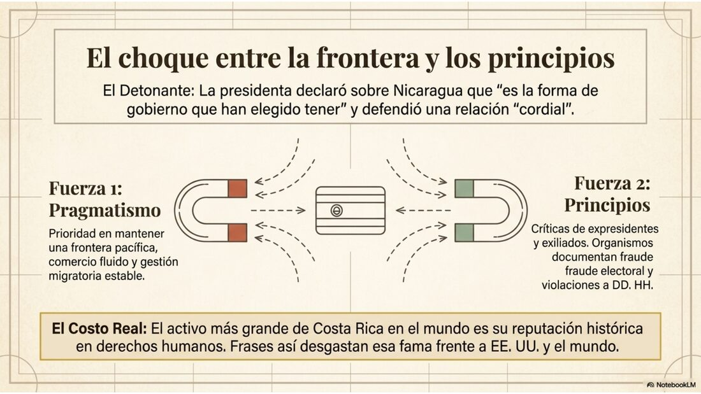
Qué pasó de verdad
En una entrevista de televisión, la presidenta Laura Fernández dijo que los nicaragüenses tienen «la forma de gobierno que han elegido tener», y defendió mantener una relación «cordial» con Daniel Ortega y Rosario Murillo, centrada en el comercio y la migración entre los dos países.
La frase generó indignación, sobre todo entre nicaragüenses exiliados y entre varios expresidentes costarricenses. Laura Chinchilla pidió disculpas públicas y calificó las palabras de «atroces»; Luis Guillermo Solís las llamó «desafortunadas» y «muy graves». La razón: organismos como la ONU y la OEA han documentado, durante años, que las elecciones en Nicaragua no son limpias, y que existen violaciones serias a los derechos humanos. La presidenta luego respondió que no puede «despotricar» contra el régimen, porque su prioridad es mantener una relación que funcione en la frontera.
Qué tan seguros estamos
Termómetro de certeza
✅Esto lo sabemos seguro: la presidenta dijo esa frase, está grabada, y existen informes internacionales que documentan fraude electoral y violaciones de derechos humanos en Nicaragua.
🤔Esto creemos, pero no es seguro: que la postura de la presidenta responda, sobre todo, a proteger el comercio y la convivencia en la zona fronteriza.
💭Esto es solo una posibilidad: que esta diferencia de criterio termine afectando, de forma duradera, la relación de Costa Rica con Estados Unidos —que sí trata al régimen nicaragüense como una dictadura.
Por qué importa, en cristiano
Costa Rica ha construido buena parte de su identidad en el mundo sobre defender los derechos humanos y la democracia, casi sin ejército y con una tradición de hablar claro. Esta frase chocó justamente con esa identidad. No es solo un comentario incómodo: toca la pregunta de qué tipo de país queremos seguir siendo cuando los intereses prácticos —el comercio, la frontera tranquila— empujan en una dirección distinta a nuestros principios declarados.
🌱 ¿Y en Costa Rica, qué tiene que ver?
Esta sí es, de las seis noticias de hoy, la más directamente nuestra. El costo no es tanto económico como de reputación: la fama de Costa Rica como país coherente con los derechos humanos es, en sí misma, un activo —nos abre puertas en el mundo. Frases como esta pueden desgastar esa fama, justo cuando el país necesita mantener buenas relaciones tanto con su vecino del norte fronterizo como con su principal aliado, Estados Unidos.
Rincón de curiosidades
cositas para sorprender a la familia en la sobremesa
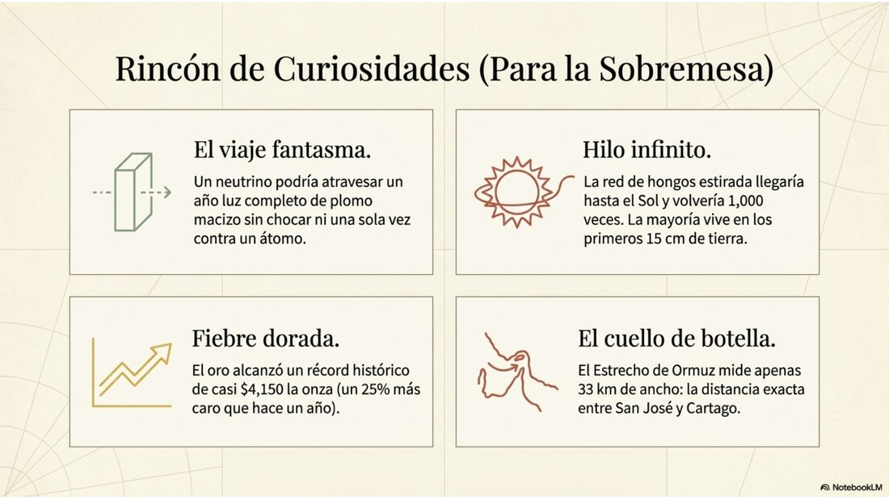
¿Sabía que...?
Un neutrino podría atravesar un año luz completo de plomo macizo —algo imposible de imaginar— sin chocar ni una sola vez contra un átomo. Por eso son tan difíciles de atrapar.
¿Sabía que...?
Si se estirara toda la red de hongos del planeta en una sola hebra, llegaría hasta el Sol y volvería casi mil veces. Y la mayoría está justo bajo los primeros 15 centímetros de tierra.
¿Sabía que...?
El oro alcanzó esta semana precios cercanos a los 4.150 dólares la onza —un récord histórico—, casi un 25 % más caro que hace apenas un año.
¿Sabía que...?
El estrecho de Ormuz, el que se reabrió esta semana, es tan angosto que en su punto más estrecho mide apenas unos 33 kilómetros: más o menos la distancia entre San José y Cartago.
Lo que todavía queda en el aire
preguntas honestas, que nadie puede responder todavía con certeza
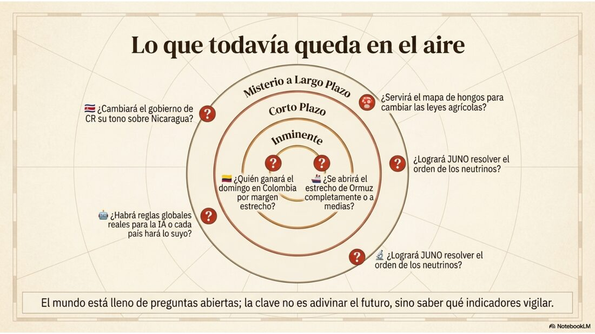
¿Se va a abrir de verdad el estrecho de Ormuz, o solo a medias? De eso depende si el precio del petróleo sigue bajando.
¿Quién va a ganar el domingo en Colombia? La diferencia es tan chica que cualquier cosa puede pasar.
¿Lograrán los científicos de JUNO resolver, en los próximos años, el orden de los neutrinos?
¿Servirá el mapa de los hongos para cambiar leyes y costumbres agrícolas, o quedará solo como un dato curioso?
¿Llegarán los países a ponerse de acuerdo sobre cómo regular la inteligencia artificial, o cada quien hará lo suyo por su lado?
¿Cambiará el gobierno costarricense su forma de hablar sobre Nicaragua, o mantendrá esta misma línea?
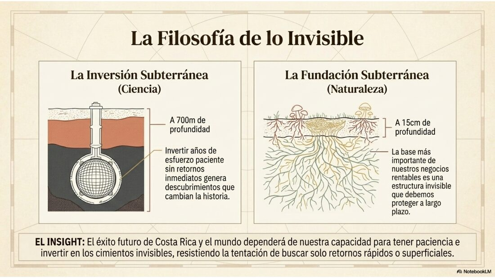
Una palabra sobre cómo trabajamos. Detrás de este boletín, en lenguaje sencillo, hay un análisis bastante más técnico: revisamos qué tan confiable es cada dato, estudiamos cómo se mueven y se conectan los hechos entre sí, y miramos también el lugar de Costa Rica dentro del mundo grande. Esa versión completa, con todo el detalle técnico, también está disponible para quien quiera ir más profundo.
Esta edición nace de una convicción sencilla: que entender el mundo no debería ser un privilegio de unos pocos. Por eso le contamos las cosas con calma y sin palabras complicadas, pero sin recortarle la verdad —porque tratar a alguien como capaz de comprender es la forma más honesta de respetarlo.
Como siempre: lo que aquí se cuenta es análisis, no una bola de cristal ni un consejo de qué hacer. El futuro nadie lo tiene asegurado, ni nosotros tampoco.